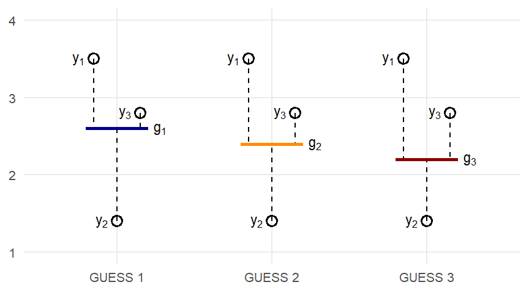

#| edit: false
#| output: false
webr::install("gradethis", quiet = TRUE)
library(gradethis)
options(webr.exercise.checker = function(
label, user_code, solution_code, check_code, envir_result, evaluate_result,
envir_prep, last_value, engine, stage, ...
) {
if (is.null(check_code)) {
# No grading code, so just skip grading
invisible(NULL)
} else if (is.null(label)) {
list(
correct = FALSE,
type = "warning",
message = "All exercises must have a label."
)
} else if (is.null(solution_code)) {
list(
correct = FALSE,
type = "warning",
message = htmltools::tags$div(
htmltools::tags$p("A problem occurred grading this exercise."),
htmltools::tags$p(
"No solution code was found. Note that grading exercises using the ",
htmltools::tags$code("gradethis"),
"package requires a model solution to be included in the document."
)
)
)
} else {
gradethis::gradethis_exercise_checker(
label = label, solution_code = solution_code, user_code = user_code,
check_code = check_code, envir_result = envir_result,
evaluate_result = evaluate_result, envir_prep = envir_prep,
last_value = last_value, stage = stage, engine = engine)
}
})Creating Exercises
Evaluate learner code, providing support with hints and solutions
Measures of Central Tendency
A measure of central tendency is a single value that attempts to describe a set of data by identifying the central position within that set of data. The mean and median are the most commonly used measures of central tendency for numerical data. ## The Mean The mean, one of the simplest concepts in statistics, is a quantity representing the “center” of a collection of numbers and is intermediate to the extreme values of the set of numbers. The mean can be calculated by taking the sum of the values in a series and dividing by the number of values (see Equation 1). However, the mean can also be thought of as a quantity that minimizes the distance from all values in set of numbers. Although thinking about the mean in this way may seem unnecessarily indirect (perhaps even silly), we will use this perspective to demonstrate some coding concepts that we need to know to facilitate calculating more complex things down the line. In addition, thinking about the mean as a value that minimizes the distance from all numbers in a series of numbers taps into the concept of sum of squares, something we will talk about more in future sessions.
\[\Large \bar{x}= \frac{1}{n} \sum_{i=1}^{n}(x_i) \tag{1}\]
Searching for the mean
Figure 1 shows a schematic of how we might think about searching for the mean by introducing guesses (g1, g2, g3). The best guess will be the one that minimizes the distance from the guessed value and the observed numbers (y1, y2, y3). But how should be summarize the distances across observations?
#| setup: true
#| exercise: ex_3
library(dplyr)#| exercise: ex_3
starwars |> ______
Hint 1
Consider using the filter() function from dplyr.
starwars |> filter(______)
Hint 2
You should filter the dataset using the species column.
starwars |> filter(species == ______)Solution.
#| exercise: ex_3
#| check: true
gradethis::grade_this_code()
Sum of Squares
In statistics, the sum of squares is a measure of variability or dispersion within a set of data. It represents the sum of the squared differences between each data point and a central value, typically the mean (or in our case each guess). It is a fundamental concept in regression analysis and ANOVA, helping to assess how well a model fits the data. Equation 2 shows how the concept of sum of squares can be adopted to our guess the mean scenario.
\[\Large SSQ_{g_1}= \sum_{i=1}^{n}(y_i - g_1)^2 \tag{2}\]
If we translate Equation 2 to plain English, it tells us that in order to calculate SSQg1, we should calculate the difference between our guess (g1) and our y-values (y1 - g1, y2 - g1, y3 - g1), then square the differences and finally sum up the squared differences. Why do square the differences before summing, you might ask? In the context of statistical analysis, the squaring operation in the sum of squares is used because: * By squaring, all deviations are treated as positive values, preventing cancellation effects when calculating the total dispersion or variation. For the purpose of what we are doing today, this is the most important reason why we square the differences. * Squaring also has the effect of giving more weight to larger deviations. This means that data points further away from the mean (or guess in our case) will have a greater impact on the overall sum of squares, which can be desirable in many statistical applications. * From a mathematical perspective, squaring is often preferred because it leads to simpler calculations, especially when dealing with derivatives in optimization problems. We may or may not talk more about this in the future.
#| context: output
mean_guess_sm <- tibble(y = rep(c(3.5, 2.8, 1.4), 3),
guess = rep(c("g1", "g2", "g3"), each = 3),
guess_value = rep(c(2.6, 2.4, 2.2), each = 3))Turn math into code
Through out this training, we will use our R skills to help us unpack the mathematics underlying statistical methods. We will start by writing code that will for each of our guesses (g1, g2, g3) in Figure 1 calculate the sum of squares as described in Equation 2. A small data frame (tibble) mean_guess_sm, containing the values in Figure 1, has already been generated. Use the interactive code block below to take a look at these data.
mean_guess_sm
Great, we have some data and it seems to correspond well with Figure 1. Now we are going to go through the different parts of Equation 2 and turn them into R code. First, let’s add a new column to mean_guess_sm containing the difference between the y-values and the guess values. To do this we will use the mutate() function from the dplyr package (part of the tidyverse). We will call the new variable diff.
mean_guess_sm %>%
mutate(diff = y - guess_value)
We see that calculating the difference results in both positive and negative values. If not dealt with, this could cause cancellation effects issues (as mentioned above). This is (one of the reasons, the most important reason) why we next square the differences.